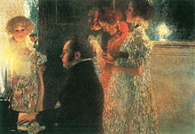
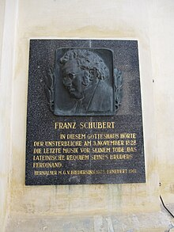

In addition to my professional interests,
I do these things in my
copious spare time.

Schubertiaden
My friends Vogl and Mayrhofer throw parties for me
where my music
is played for friends and socialites.
Vogl and Mayrhofer love my works, and they are convinced
that anyone who hears them will be equally
charmed.
The parties are called Schubertiaden after the guest of
honor.

Reading Sessions
Other musicians get together to play and critique one another's works.
At these sessions, we learn a lot from the give-and-take with
colleagues,
even though we would be mortified to admit we changed anything.

It can make me cranky, and that makes it harder to schmooze
the socialites who come to Vogl and Mayrhofer's Schubertiaden.
But I am more than my diagnosis, and I hope the research we support
will spare future sufferers from my fate.
Cyclothymia Society
In addition to my dipsomania, I live every day with Cyclothymia.It can make me cranky, and that makes it harder to schmooze
the socialites who come to Vogl and Mayrhofer's Schubertiaden.
But I am more than my diagnosis, and I hope the research we support
will spare future sufferers from my fate.